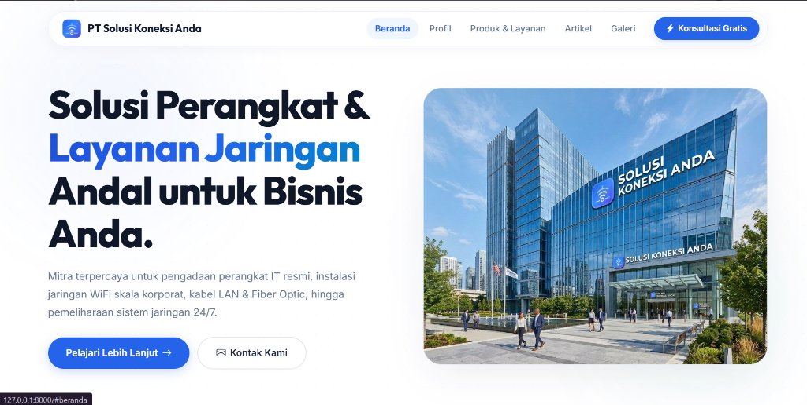

Agu – Sep 2026
Pembuatan Website Company Profile
- Merancang website profil responsif dengan panel admin dinamis untuk pembaruan konten.
- Mengimplementasikan fitur CRUD, autentikasi pengguna, dan integrasi database dengan Laravel & Bootstrap.